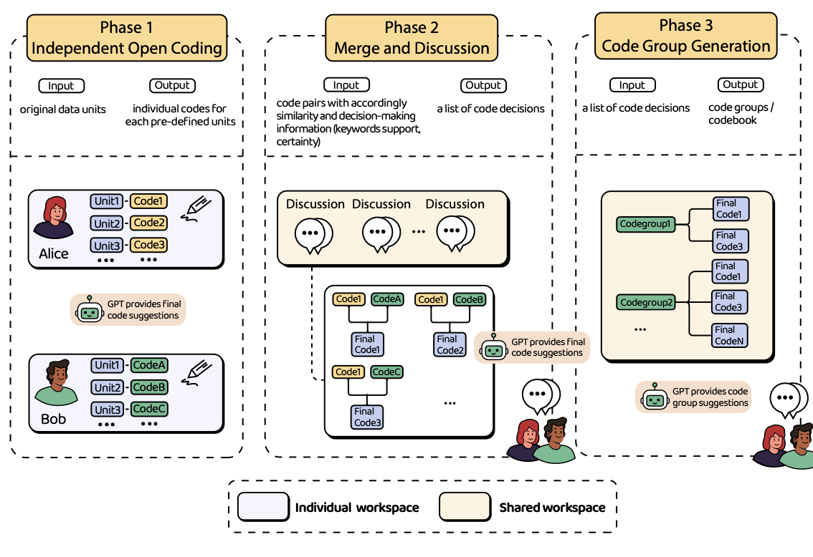
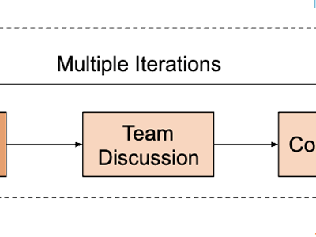
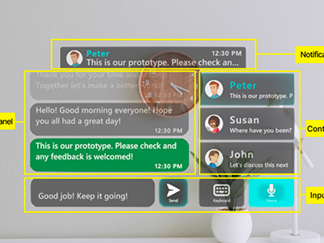
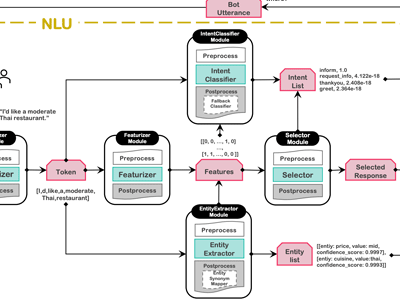
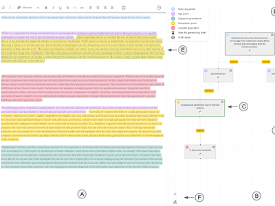
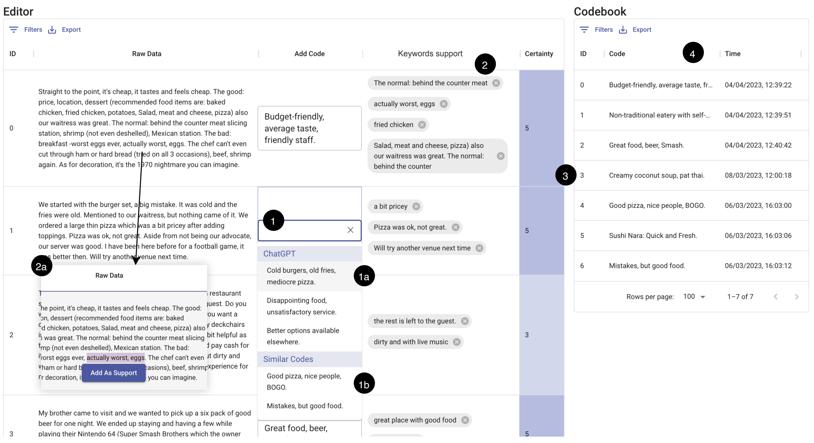
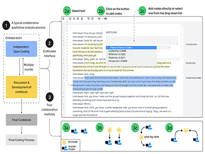
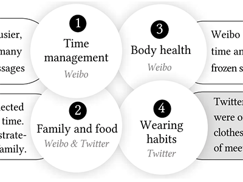
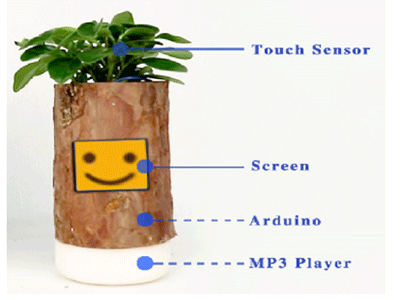

I am a PhD student in Information Systems Technology and Design at Singapore University of Technology and Design, mainly advised by Simon Perrault and co-advised by Kenny Choo. I am also greatly honored to work closely with Prof Shendong Zhao from NUS-HCI Lab and Prof Toby Jia-Jun Li from University of Notre Dame.
My primary research interests lie in Human-Computer Interaction (HCI) and Computer-Supported Cooperative Work (CSCW). Specifically, I am passionate about:
- AI4SocialScience: investigating effective, automated approaches and tools to facilitate qualitative coding collaboration;
- Trustworthy AI: building trustworthy AI-assisted qualitative coding applications.
- LLMs+Interaction: building LLM-powered applications, studying the interactions modes of LLMs.
📧 Email: gaojie056[AT]gmail.com

Updates
2023.11 Give a presentation about CollabCoder project in NUS. Thanks for the invitation from Prof Khoo Eng Tat!
2023.10 Attended CSCW2023 and presented CollabCoder demo virtually! (due to visa and funding issues)
2023.08 🎉 One coauthored paper "GlassMessaging" has been accepted by Ubicomp2023!
Projects and Publications

CollabCoder: A GPT-Powered Workflow for Collaborative Qualitative Analysis.
Jie Gao, Yuchen Guo, Gionnieve Lim, Tianqin Zhang, Zheng Zhang, Toby Jia-Jun Li, Simon Tangi Perrault.
Preprint
LLM+Social Science
PDF

Trust Building in Subjective Tasks: The Impact of Human-AI Collaboration in AI-Assisted Qualitative Coding.
Jie Gao...Simon Tangi Perrault.
Under Review
AI4SocialScience
Trustworthy AI
PDF

GlassMessaging: Towards Ubiquitous Messaging Using OHMDs.
Nuwan Janaka, Jie Gao, Lin Zhu, Shengdong Zhao, Lan Lyu, Peisen Xu, Maximilian Nabokow, Silang Wang, Yanch Ong
Ubicomp2023
SmartGlass
PDF

Understanding the Complexity and Its Impact on Testing in ML-Enabled Systems.
Junming Cao, Bihuan Chen, Longjie Hu, Jie Gao, Kaifeng Huang, Xin Peng.
ICSME2023
AI+SE
PDF

VISAR: A Human-AI Argumentative Writing Assistant with Visual Programming and Rapid Draft Prototyping.
Zheng Zhang, Jie Gao, Ranjodh Singh Dhaliwal, Toby Jia-Jun Li.
UIST2023
LLM+Writing
PDF

CollabCoder: A GPT-Powered Workflow for Collaborative Qualitative Analysis.
Jie Gao, Yuchen Guo, Toby Jia-Jun Li, Simon Tangi Perrault.
CSCW demo 2023
LLM+Social Science
PDF

CoAIcoder: Examining the Effectiveness of AI-assisted Human-to-Human Collaboration in Qualitative Analysis.
Jie Gao, Kenny Tsu Wei Choo, Junming Cao, Roy Ka Wei Lee, Simon Perrault.
ToCHI2023
AI4SocialScience
PDF

Differences of Challenges of Working from Home (WFH) between Weibo and Twitter Users during COVID-19.
Jie Gao, Xiayin Ying, Junming Cao, Yifan Yang, Pin Sym Foong, Simon Perrault.
CHI EA 2022 (Short paper)
PDF

Expressive Plant: A Multisensory Interactive System for Sensory Training of Children with Autism.
Jie Gao, Leijing Zhou, Miaomiao Dong, Fan Zhang.
Ubicomp 2018 (Poster)
PDF

CollabCoder: A GPT-Powered Workflow for Collaborative Qualitative Analysis.
Jie Gao, Yuchen Guo, Gionnieve Lim, Tianqin Zhang, Zheng Zhang, Toby Jia-Jun Li, Simon Tangi Perrault.
Preprint LLM+Social Science PDF
Trust Building in Subjective Tasks: The Impact of Human-AI Collaboration in AI-Assisted Qualitative Coding.
Jie Gao...Simon Tangi Perrault.
Under Review AI4SocialScience Trustworthy AI PDF
GlassMessaging: Towards Ubiquitous Messaging Using OHMDs.
Nuwan Janaka, Jie Gao, Lin Zhu, Shengdong Zhao, Lan Lyu, Peisen Xu, Maximilian Nabokow, Silang Wang, Yanch Ong
Ubicomp2023 SmartGlass PDF
Understanding the Complexity and Its Impact on Testing in ML-Enabled Systems.
Junming Cao, Bihuan Chen, Longjie Hu, Jie Gao, Kaifeng Huang, Xin Peng.
ICSME2023 AI+SE PDF
VISAR: A Human-AI Argumentative Writing Assistant with Visual Programming and Rapid Draft Prototyping.
Zheng Zhang, Jie Gao, Ranjodh Singh Dhaliwal, Toby Jia-Jun Li.
UIST2023 LLM+Writing PDF
CollabCoder: A GPT-Powered Workflow for Collaborative Qualitative Analysis.
Jie Gao, Yuchen Guo, Toby Jia-Jun Li, Simon Tangi Perrault.
CSCW demo 2023 LLM+Social Science PDF
CoAIcoder: Examining the Effectiveness of AI-assisted Human-to-Human Collaboration in Qualitative Analysis.
Jie Gao, Kenny Tsu Wei Choo, Junming Cao, Roy Ka Wei Lee, Simon Perrault.
ToCHI2023 AI4SocialScience PDF
Differences of Challenges of Working from Home (WFH) between Weibo and Twitter Users during COVID-19.
Jie Gao, Xiayin Ying, Junming Cao, Yifan Yang, Pin Sym Foong, Simon Perrault.
CHI EA 2022 (Short paper) PDF
Expressive Plant: A Multisensory Interactive System for Sensory Training of Children with Autism.
Jie Gao, Leijing Zhou, Miaomiao Dong, Fan Zhang.
Ubicomp 2018 (Poster) PDF